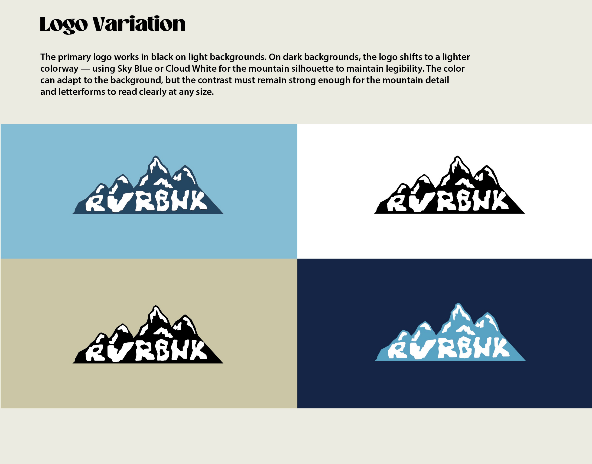
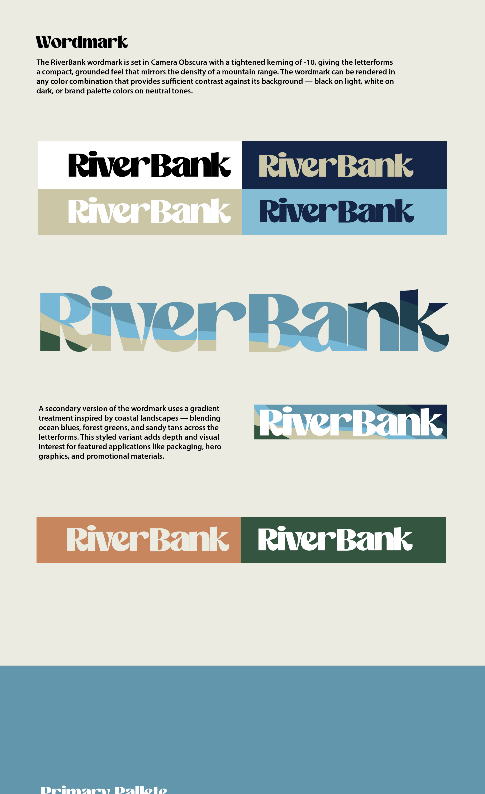
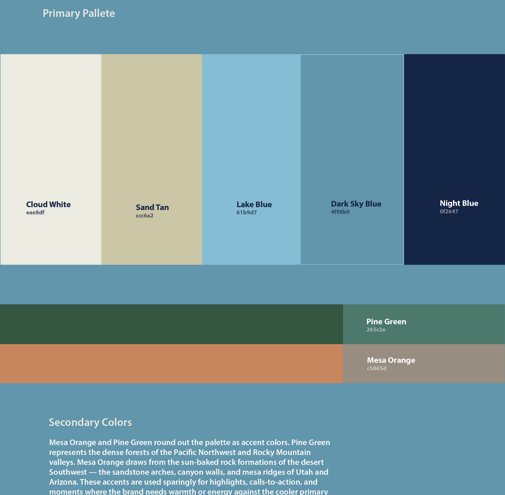
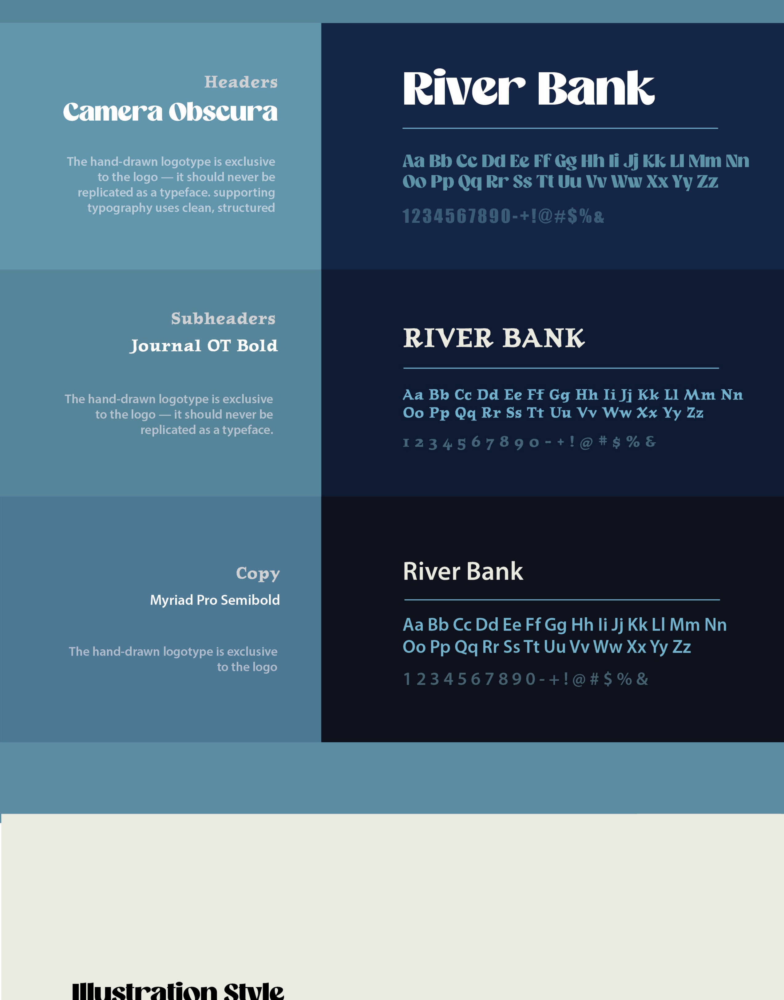
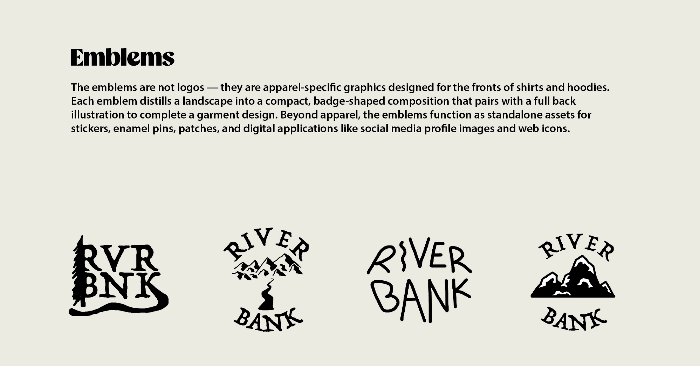
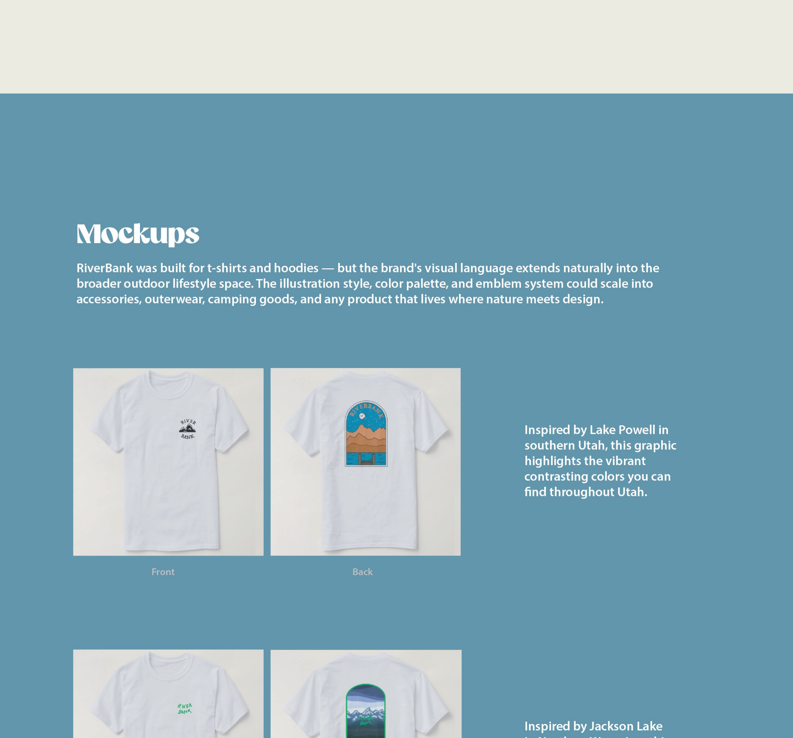
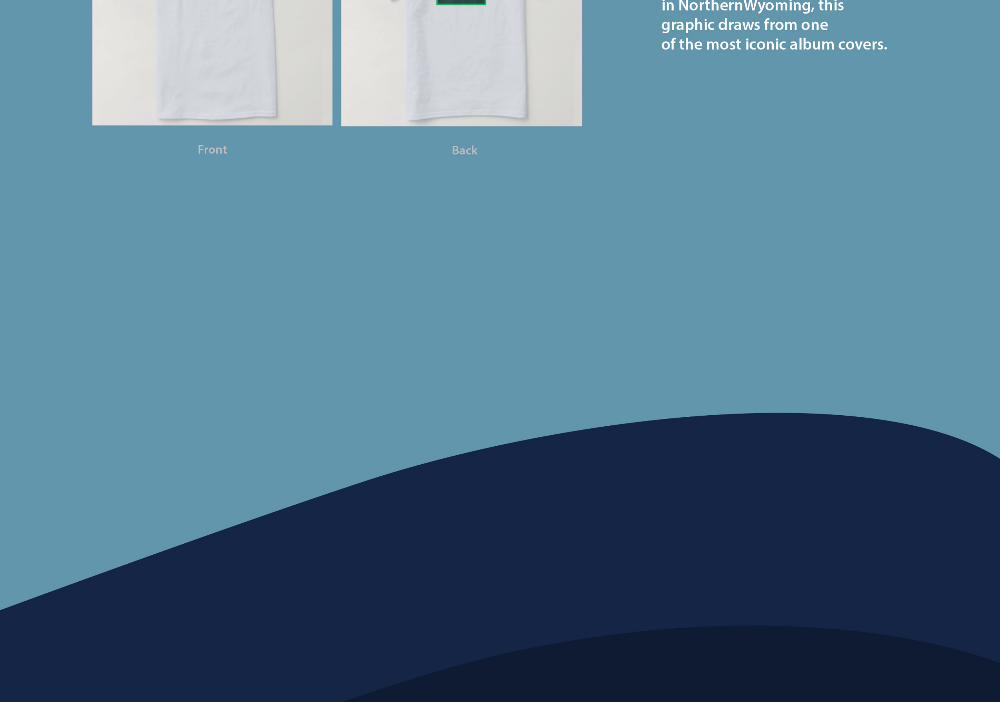

Brand Standards Guide
About RiverBank
RiverBank is an outdoor lifestyle and clothing brand built on a simple belief: the best designs come from the landscapes we love. The brand celebrates the beauty of the outdoors through hand-drawn illustration, rugged typography, and earthy tones pulled from mountains, rivers, and open skies.
Every illustration, emblem, and garment is rooted in real places — mountains that break the skyline, rivers that carve through valleys, coastlines lit by the moon. The landscape is the hero, not the brand.
Primary Logo
The primary RiverBank logo is the mountain wordmark — the brand name integrated into a hand-drawn mountain range silhouette. This is the only mark that represents the brand. All other graphics are supporting elements.


Color Palette
The RiverBank palette is drawn directly from the national parks and landscapes that inspire the brand. Soft blues, warm tans, and muted earth tones create an approachable, natural feel — while deeper values like Night Blue and Pine Green bring the ruggedness of the outdoors into the system.

Brand Typefaces
The type system balances three distinct voices. Camera Obscura serves as the display face for the logo and headlines. Journal OT Bold steps in for subheadings. Myriad Pro Semibold ties it together as the body typeface — clean, neutral, and highly legible.

Illustration Style
RiverBank illustrations use a layered, flat-color technique with hand-drawn outlines. Landscapes are built from overlapping color bands that create depth without realistic rendering. The style is warm, approachable, and distinctly handmade.



Mockups
RiverBank was built for t-shirts and hoodies — but the brand's visual language extends naturally into the broader outdoor lifestyle space. Every garment follows a front/back structure: an emblem graphic on the front chest, paired with a full landscape illustration on the back.


Conclusion
RiverBank is a personal project, but it was designed as a real brand. Every element — from the Grand Teton wordmark to the Lake Powell illustration to the emblem system — was built to scale. The visual language is flexible enough to grow into new parks, new illustrations, and new product categories while staying rooted in the same principle: let the landscape lead.